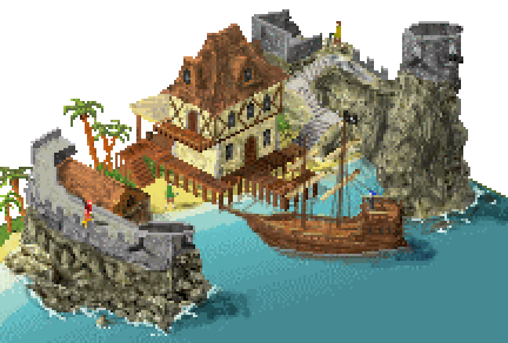

References / Illustration / 485
Käpt’n Börgers Piratennest (PixelPlaza)
A small isometric pirate harbor from the German pixel art community PixelPlaza, with a timber house, a fort wall, a ship, and figures a few pixels tall.
- Source
- Wikimedia Commons: Pixel-Art Käpt'n Börgers Piratennest.gif
- Creator
- Boerger (@pixelplaza.de)
- Made
- 2008 (Commons date 11 April 2008)
- Style
- Pixel Art (agent-proposed, not yet reviewed by a person)
- Moods
- Playful, handmade, detailed
- Evidence
- Downloaded the Commons file (216 × 146 px, one frame, about 250 colors) and inspected it enlarged 5× to 1080 × 730 px.
- Reviewed
- Rights
- Open license, stored. License: CC-BY-SA-3.0. Rights policy

Context
Commons describes the file as “Artwork from the German pixel art community named PixelPlaza, depicting a pirates’ lair”, author Boerger (@pixelplaza.de), dated 11 April 2008, licensed CC BY-SA 3.0. Wikimedia Commons.
Wikipedia names isometric pixel art as a common form, with Habbo Hotel and eBoy as examples. Wikipedia: Pixel art.
Observed
- A harbor seen from above at an isometric angle, on a white ground: a timber-framed house with a brown roof, a jetty on stilts, a gray stone fort wall, and a tower on a rock.
- A brown galleon with two masts lies in turquoise water. A red parrot sits on the wall.
- Figures are about 5 to 8 pixels tall.
- Walls and roofs follow stepped two-to-one diagonals.
- Rock and stone are shaded with many close tones and scattered single pixels, so the texture looks noisy rather than flat.
- No smooth gradient appears. White spray pixels mark the waves at the rock.
Why it belongs
The piece shows the community form of pixel art in the 2000s: a self-contained scene for its own sake, not a game asset.
Its many tones and textured rock move away from the flat 8-bit palette. Use it for the isometric branch, not as a model for interfaces.
Borrow
Draw isometric edges with a regular two-pixels-across, one-pixel-down step.
Give tiny figures one bright color each so that they read against a detailed ground.
Measured
Machine-extracted by tools/image-traits.py on . Full measurement.
- Mean chroma
- 0.16
- Palette
- #000000 24%
- #458a93 14%
- #5c5b47 5%
- #4c4b3b 4%
- #6a6859 4%
- #644126 4%
- #5eb1b7 4%
- #7d5331 4%

